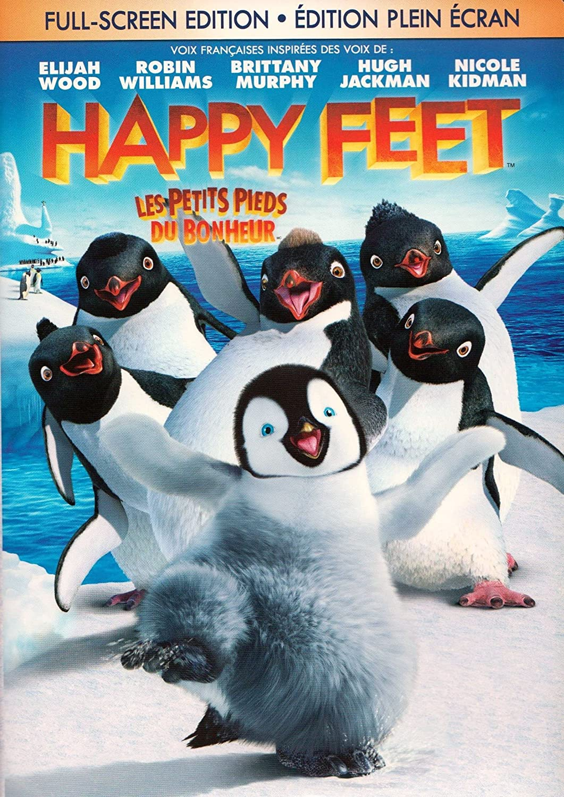

|
Les petits pieds du bonheur
|
|||||||||||||||
|  |
|
||||||||||||||
| Synopsis |
Né dans une colonie de manchots qui trouvent l'âme sœur en chantant, Mumble a un handicap : il ne peut pas chanter une note juste. Il fait en revanche des claquettes comme personne. Banni par les siens à cause de sa différence, Mumble part en Terre Adélie. |
||||||||||||||